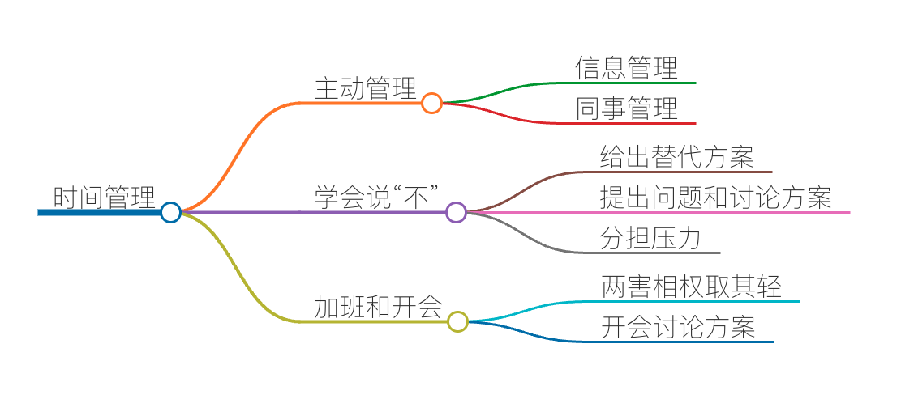

时间管理：同扭曲时间的事儿抗争

我一直说，时间是人生中最宝贵的财富，今天我就来跟你聊聊时间管理方面的话题。
关于时间管理，我以前在外企工作时，受过一个专门的培训，后来我也在工作中总结过自己的方式。时间管理是非常重要的，因为时间过得实在是太快了，快得让你有点受不了，而看似忙碌的我们似乎在这一年中也没有做太多事，尤其是让自己能成长的事情。
有那么一句话是这么说，老天很公平，给了所有人同样多的时间，而有的人能够把时间用好，有的人则没有把时间用好。日积月累，人和人的差距就越来越大了。
我在之前的课程中和你讲过，我在工作强度很大的情况下，依然可以找到时间来学习和提升自己，主要是我自己很渴望学习。今天我就想和你聊一下，除了自己对某件事情的热情外，我们还有什么方法可以管理好自己的时间。
不过，说实话，在安排时间方面，我成长于一个相对于今天算是比较好的环境，举几个例子。
例子一：那个年代，没有智能手机，工作中也不用实时聊天工具。而现在，很多公司都会有若干个聊天群，所有人都可以把信息发给所有的人，而不管这个事是否与你相关。但这些信息无法像邮件那样根据邮件标题聚合，或是通过设置规则自动分类……于是你工作在了一个信息杂乱无章的环境里，而且还在不断地被人打扰，不断地被人打断。
例子二：那个年代，别人要来找我开会，需要先给我发会议邀请，而且发会议邀请的时候，会找我日历上空闲的时间段来确定会议时间。所以，我可以把很多工作安排在我的日历上，通过邮箱（Outlook 或是 Gmail 都有这样的功能）共享出去。这样，别人都会自觉地绕开我有安排的时间段来找我。
而今天，我看到很多公司直接在微信上联系。你要是回复慢了，电话直接打过来，直接叫你去开会。不像我那个年代，老板临时给员工开会也要问一下员工有没有时间，但现在的工作环境连问都不问，直接一句，你来一下。
例子三：那个年代，我们喜欢有计划地安排工作，然后按此执行。还记得在路透工作的时候，管理者们都说，你工作时如果有 70% 的时间能花在项目开发上，算是很高效了，一般来说，正常值也就是 50% 左右。在亚马逊的时候，每次开会都会把会议中要讨论的事打印出来，前 10 分钟大家都在读文档，然后直接讨论，所以基本上会议都保持在半小时左右。
这可能是外企的好处吧，从上到下都知道时间管理是很重要的事，所以，从管理层到执行层都会想方设法帮助程序员专注地做好开发工作。包括尽可能地不开会，不开长会，需求和设计都是要论证很久才会决定做不做，项目管理会帮你把你处理额外工作的时间也算进去，还会把你在学习上花的时间也计算进去。所以，时间在整个组织上能够被有效地管理和安排着。完全不像今天国内的互联网公司。
所以，我以前管理自己的时间还是比较容易的，然而，现在人的工作环境的确是非常不利于管理。不过，我还是想在这里谈一下如何管理自己的时间，希望对你有帮助。
主动管理
无论什么事情，如果你发现你持续处于被动的状态下，那么你一定要停下来想一想如何把被动变为主动。因为在被动的方式下工作，你是不可能做好工作的，无论什么事。我是一个非常不喜欢被动的人，所以，对于任何被动状态，我都要“反转控制”，想尽一切方式变成主动。
如果你发现你的时间老是被别人打断，那么你就要告诉大家，我什么时间段在做什么事，请大家不要打扰我。我以前在国外看到有个老外就在自己的工位上挂了一个条幅，上面写着“正在努力写代码中，请勿打断……”而我在亚马逊工作时，亚马逊也允许员工想沉浸于工作时不用来公司而是可以在家办公（work from home）。我在阿里工作那会，有时候也怕被人打断，所以，我会跑到别的楼里找个空的工位工作。
在今天，我觉得你也可以这么干，你可以在群里事先告诉大家，我在几点到几点要无间断地做某个事，这个期间不会看任何微信或是钉钉的群聊，也不会接任何的电话，请大家不要来打扰我。而且还可以学习一下那个我见过的老外，在自己的工位上挂一个不要打扰我的条幅。人肉 Mute 掉所有的打扰。
另外，可以仿照一下以前在 Outlook 里设置工作日程的方式，把你的工作安排预先设置到一个可以共享的日历上，然后分享给大家，让大家了解你的日程。这样，可以让你的同事和老板能事先有个谱儿，而不至于想打断你就打断你。
你甚至可以要求你的同事，重要的事，不要发微信，而是要发邮件，因为微信会有很大概率看不到。这样一来，你就再也不用在一大堆聊天信息中做人肉的大数据挖掘，来找到和你有关的信息。
信息管理真的非常重要，因为将信息做好分类，才方便检索，方便你通过自己的优先级来处理信息。而目前看来，这些只有邮件才能够更好地完成（邮件可以帮你通过邮件标题聚合，你可以设置很多规则来自动化分类邮件，还可以帮你设置自动化回复）。
换句话说，你要主动管理的不是你的时间，而是管理你的同事，管理你的信息。
学会说“不”
上面说了如何主动地管理你的时间。但是，那只是能让你有大块可以专注于工作的时间。然而，这并不能帮助你解决时间不够的问题。比如，现在的很多公司总是把工作安排得非常紧，今天提的需求，恨不得明天就上线，这也就是为什么今天加班的严重程度比我那个时候还更为严重。
我认为，现在的很多公司已经不尊重科学和客观规律了，如果让他来管理孕妇，我觉得他们恨不得要把 10 个月的产期缩短成 2 个月。
所以，在这种情况下，你要学会对某些事说“不”，甚至是要学习对老板说不。这其实是一种“向上管理”的能力。
以前在外企接受到的管理方面的培训，有这么一条“Never Say No”——永不说不。的确是这样，说“不”会让人产生距离和不信任。所以，真是这样的，永远不要说不。但是，你明明做不到，还不能说不，这应该怎么办呢？这里面的诀窍如下。
- 当你面对做不到的需求时，你不要说这个需求做不到。尤其是，你不要马上说做不到，你要先想一下，这样让别人觉得你是想做的，但是，在认真思考过后，你觉得做不到，并且给出一个你觉得能做到的方案。这里的诀窍是——给出另一个你可以做到的方案，而不是把对方的方案直接回绝掉。
- 当你面对过于复杂的需求时，你不要说不。你要反问一下，为什么要这样做？这样做的目的是什么？当了解完目的以后，你可以给出一个自己的方案，或是和对方讨论一个性价比更好的方案。你可以回复说，这个需求好复杂，我们能不能先干这个，再做那个，这样会更经济一些。这里的诀窍是——我不说我不能完全满足你，但我说我可以部分满足你。
- 当你面对时间完全不够的需求时，你也不要说不。既然对方把压力给你，你要想办法把这个压力还回去，或是让对方来和你一同分担这个压力。
这个时候，我惯用的方式是给回三个选择：a. 我可以加班加点完成，但是我不保证好的质量，有 bug 你得认，而且事后你要给我 1 个月的时间还债。b. 我可以加班加点，还能保证质量，但我没办法完成这么多需求，能不能减少一些？c. 我可以保质保量地完成所有的需求，但是，能不能多给我 2 周时间？
这里的诀窍是——我不能说不，但是我要有条件地说是。而且，我要把你给我的压力再反过来还给你，看似我给了需求方选择，实际上，我掌握了主动。
这就是学会说“不”的方法。说白了，你要学会在“积极主动的态度下对于不合理的事讨价还价”。只有学会了说“不”，你才能够控制好你的时间。
加班和开会
国内的公司和国外公司还有一个很不同的事情，就是大量的加班和大量冗长的会议。我见过很多国内的公司，无论大公司还是小的创业公司，都是这个样子的。
老实说，我对这个事情也能理解也不能理解。一方面，我能理解为什么会有这么多的加班和会议，主要原因还是管理者在管理上只会使用低级的通过劳动密集型的方式来做事。
另一方面，我不能理解的是，国外公司的加班和会议长度根本不像国内的公司，人家做得也比中国的公司好得多。在国内的公司，老板们看到团队在拼命加班，会很高兴，而在国外的公司，老板看到团队在拼命加班，会觉得这个团队一定是哪里出了问题，老板会比较焦虑。
那么，对于身处于这样环境中的我们，应该怎样管理好自己的时间，或是为自己争取时间呢？老实说，在恶劣的环境中优雅地行动，基本上是一件不可能的事情。我也经历过这样的事，但我也没有太好的办法。不过，我还是可以跟你分享几个我的实践方式。
对于加班的事，除了像上面说的那样，学会如何说“不”外，我发现很多时候造成加班的原因就是恶性循环。也就是说，因为加班干出来了质量不好的软件，于是线上故障很多，要花时间处理，而后面的需求也过来了，发现复杂代码的扩展性很差，越干越慢，越干越烂，越干故障越多。于是，你会被抱怨得越来越多。
这里，我觉得，如果怎么做都要受伤害，那么两害相权取其轻。你要学会比较是项目延期的伤害大，还是线上故障的伤害大，是先苦后甜好，还是积压问题好，聪明的你应该能作出正确的判断。
对于开会，我觉得今天大多数的会都开错了。在会上抛出问题，还是开放性的问题，然后公说公有理，婆说婆有理，任大家自由发挥，各种跑题跑偏，最后还没有任何的答案。开会，不是讨论问题，而是讨论方案，开会不是要有议题，而是要有议案。
所以，作为与会者，如果你发现没有议案，大家海了去说，那么你有两种选择，跳出来帮大家理一理，或者也可以说一下，如果会上讨论不清，要不先线下讨论，有了方案再来评审。也许在一些会上你不敢这么干，但是有些会你是可以这么干的。能影响的这些都能为你争取到很多时间。
好了，总结一下。今天我主要跟你分享了几个能为自己争取更多时间的方法，比如主动管理时间、学会说“不”，以及面对高强度的加班和冗长的会议时，该如何应对和解决等。因为我认为，只有将使用时间的主动权掌握在自己手上，才能更好地利用时间，才能更为高效率地工作。所以，这才是时间管理的关键点。